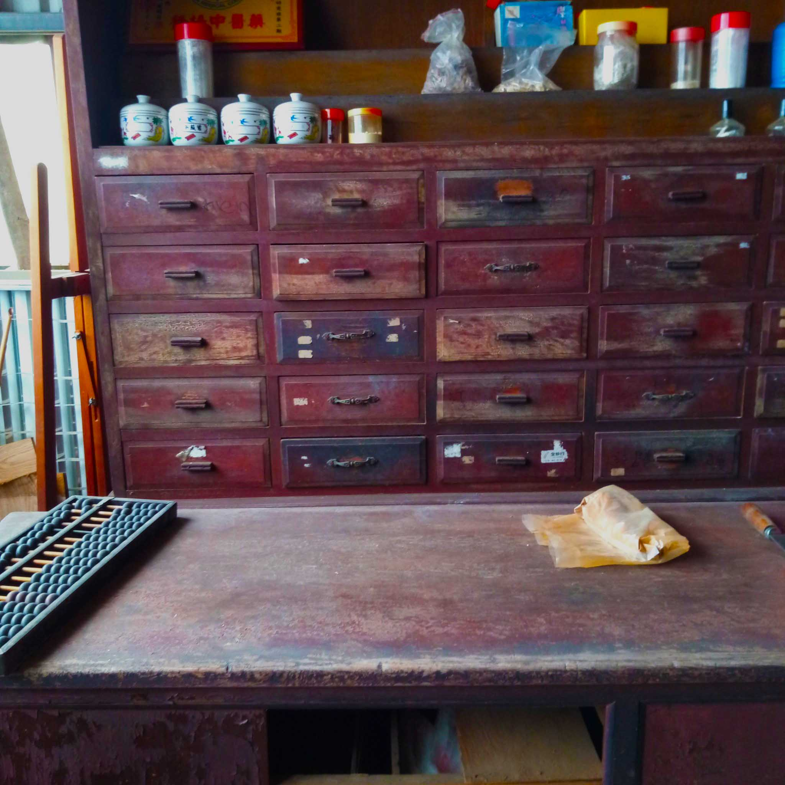
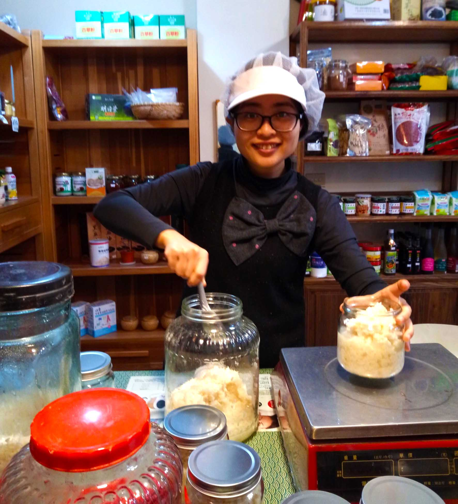
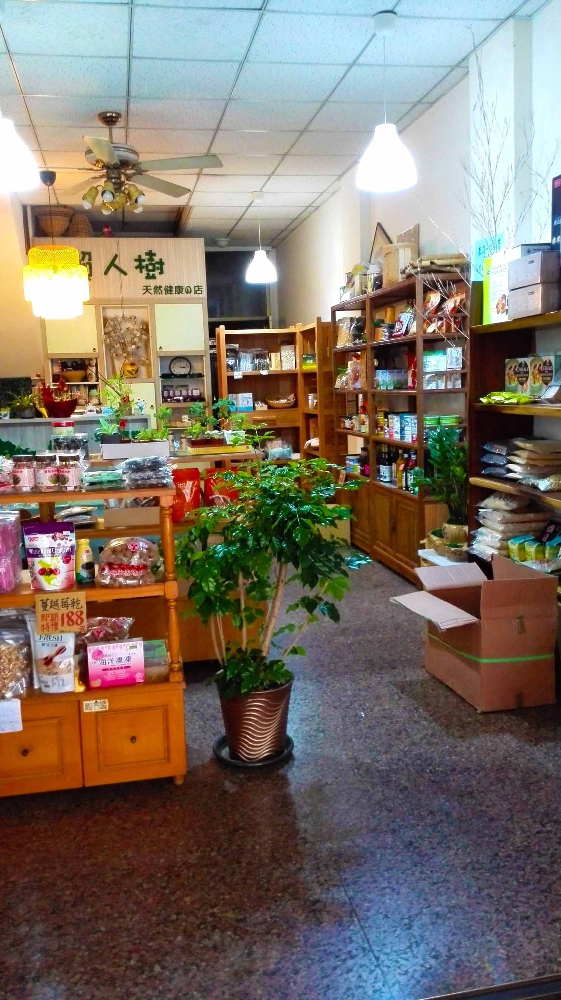

中藥老店 X 有機食品店
懶人樹天然健康の店的前身，是經營30餘年的中藥老店(全珍中藥行)，最初發跡於豐原今日市場，在中藥產業日漸蕭條的時代，剛開始經營也一度出現困難。但路遙知馬力，它以堅守品質、視客如親的態度，逆向成長，得到顧客們的認可和信任。如今店面遷移至潭子已超過20年，許多人仍不辭辛勞找過來。
老闆江永銘先生在經營藥坊的過程中，意識到日常飲食對健康的影響。鑑於近年來食安問題頻傳，為了讓家人及朋友吃到安全健康的食物，他毅然決定投入有機農業，自己下田耕種；並將中藥店轉型為「中藥X有機食品」店，提供更全面的養生資訊及最優質的藥材、食品及日常用品。


傳統中藥店一般為家傳或師徒制，因為大部分知識是靠代代經驗積累，要了解的東西太多，需要長時間學習。藥材品質如何判斷是必學技能之一，在科學尚未普及的年代，一般以產地、形狀、成色、氣味等去判斷它藥效的好壞。但現在添加物、防腐劑、農藥等濫用問題太過普遍，傳統的方法已無法應付。也就是說，就算這東西藥效再好，那也是和著毒吃下肚。
有機食品店是因應這些新興問題而出現的行業，它賣的東西就是些日常食品、用品。但產品的品管上，它使用源頭控管、檢驗等方式，層層把關，力圖把這些食安風險降至最低。
一般有機店會提供一些健康的資訊給顧客，告訴他們可以如何養生。但隨著人們健康意識抬頭，有機事業蓬勃發展，這些資訊卻也有越來越商業化的趨勢。原本各種飲食、療法、超級食物已經夠眼花撩亂，財團為了推廣自家產品也加進亂局，各有一套理論、說得天花亂墜，讓人不知該信哪一個。
反觀中醫陰陽、五行等理論，卻是經過數千年的驗證，而且中醫更看重整體，不會以為一種方法就能治百病，而是講究人體的平衡，這是目前各種飲食療法所缺乏的部分。
把中藥店與有機食品店結合，目的就是希望互補長短。況且兩者看似風格迥異，本質卻沒有差別：產品上，都需要充分了解並嚴格把關；服務上，都提供健康方面的知識和諮詢；態度上，都要以對待家人的心對待客人；經營上，都講究細水長流，以誠信和顧客建立長久的友誼。最重要的是──兩者的宗旨都是助人健康。
